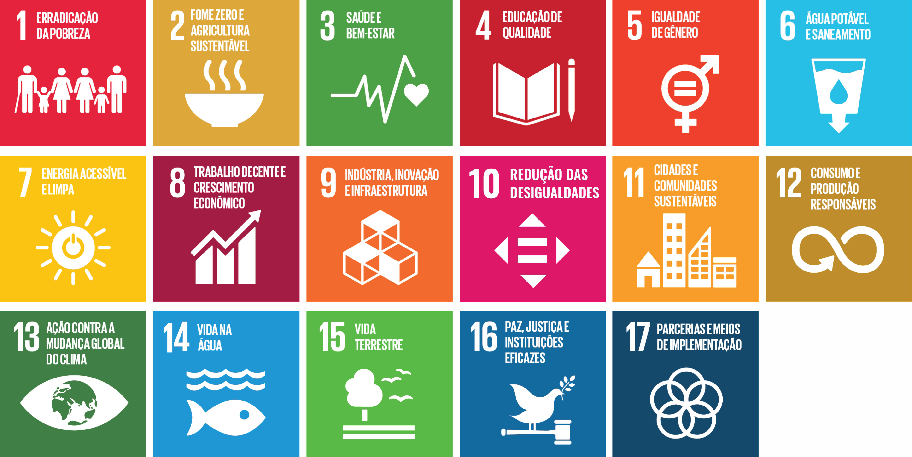

ESG - Enviromental, Social and Governance
O termo foi cunhado em 2004 em uma publicação do Pacto Global em parceria com o Banco Mundial. Os critérios ESG estão totalmente relacionados aos 17 Objevos de Desenvolvimento Sustentável (ODS), estabelecidos pelo Pacto Global, iniciava mundial que envolve a ONU e várias endades Internacionais. É uma jornada de transformação dos negócios e envolve a construção de um mundo inclusivo, éco e ambientalmente sustentável, que garanta qualidade de vida para todos.
Por que sua empresa deve considerar estratégias de ESG?
Nossa consultoria destaca que essa meta depende da habilidade das empresas em desenvolver e implementar prácas de negócios que alinhem lucro, propósito e transparência.
É a avaliação da situação atual da organização quanto à sustentabilidade e desenvolvimento de uma idendade organizacional, análise do ambiente interno e externo da empresa, construção de objevos estratégicos sustentáveis e criação do plano de ação fomentado no âmbito social, econômico e ambiental. As estratégias de ESG podem afetar a marca, a receita, a avaliação da empresa e a percepção de mercado, além de reduzir o risco. Consumidores, funcionários e invesdores estão prestando cada vez mais atenção ao progresso de ESG de uma organização e à forma como ela se alinha com as metas dos clientes, invesdores e funcionários. Com os desenvolvimentos de ESG criando um futuro melhor, as organizações conseguem progredir em relação aos programas de Sustentabilidade, de impacto Social e de Governança.
O que preocupa os analistas de ESG é o Green Hushing (silêncio verde). A empresa prefere ficar calada sobre a sustentabilidade dos seus produtos ou serviços porque tem medo de crícas e de ser acusada de Greenwashing, ou seja, de apenas estar no discurso, sem uma atuação verdadeira na agenda ESG.